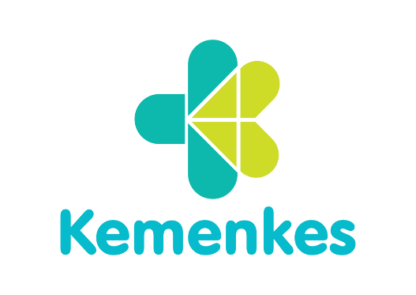
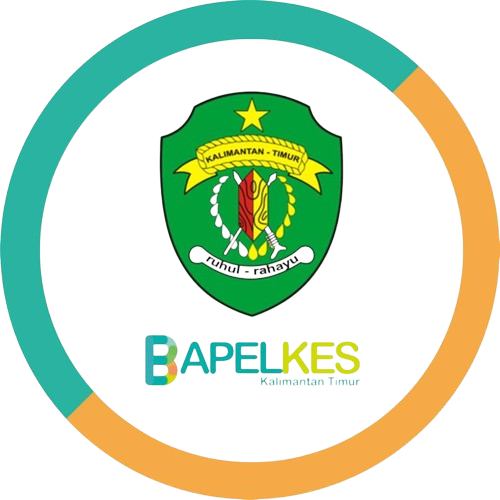

"Seminar Nasional (Online) The 3rd Nusantara Conference on Pharmacy Practice & Science (NC-Pharma)"
Pendahuluan
NC-PHARMA
Penyakit neurodegeneratif merupakan salah satu tantangan
kesehatan global
yang semakin mendapat perhatian seiring dengan meningkatnya angka harapan
hidup dan perubahan pola penyakit diberbagai negara. Gangguan seperti penyakit
Alzheimer, penyakit Parkinson, amyotrophic lateral sclerosis (ALS), dan berbagai
bentuk demensia lainnya ditandai oleh proses degenerasi progresif pada sistem saraf
yang menyebabkan penurunan fungsi kognitif, motorik, maupun kualitas hidup
penderitanya. Hingga saat ini, sebagian besar terapi yang tersedia masih berfokus
pada pengendalian gejala, sementara pengembangan terapi yang mampu
memperlambat atau menghentikan progresivitas penyakit masih menjadi tantangan
besar dalam bidang ilmu kesehatan dan kefarmasian.
Perkembangan ilmu kefarmasian dalam beberapa dekade terakhir telah
membuka peluang baru untuk menjawab tantangan tersebut melalui berbagai inovasi,
mulai dari penemuan target molekuler baru, pengembangan senyawa terapeutik
berbasis bahan alam maupun sintetik, sistem penghantaran obat yang mampu
menembus blood-brain barrier, hingga pemanfaatan teknologi artificial intelligence
(AI), omics sciences, dan precision medicine dalam proses penemuan serta
pengembangan obat. Di sisi lain, kompleksitas mekanisme penyakit neurodegeneratif
menuntut pendekatan riset yang lebih kolaboratif dan multidisiplin, melibatkan
akademisi, peneliti, tenaga kesehatan, industri farmasi, regulator, serta berbagai
pemangku kepentingan lainnya agar hasil penelitian dapat diterjemahkan menjadi
inovasi yang memberikan manfaat nyata bagi masyarakat.
Sebagai salah satu disiplin ilmu yang berperan dalam keseluruhan siklus
pengembangan dan penggunaan obat, ilmu kefarmasian memiliki posisi strategis
dalam mendorong lahirnya inovasi terapeutik sekaligus meningkatkan kualitas
pelayanan pasien dengan penyakit neurodegeneratif. Oleh karena itu, diperlukan
suatu forum ilmiah yang mampu mempertemukan berbagai pemangku kepentingan
untuk berbagi perkembangan terkini, mendiskusikan hasil penelitian, memperluas
jejaring kolaborasi, serta merumuskan langkah-langkah strategis dalam mendukung
pengembangan terapi dan pelayanan kefarmasian yang lebih efektif.
Berdasarkan latar belakang tersebut, Seminar Nasional Kefarmasian
mengangkat tema "Pengembangan Inovasi Farmasi untuk Gangguan
Neurodegeneratif: Menjembatani Penemuan Obat, Terapi Presisi, dan Perawatan
yang Berpusat pada Pasien". Tema ini mencerminkan komitmen untuk membahas
perkembangan ilmu kefarmasian secara komprehensif, mulai dari penemuan dan
pengembangan kandidat obat, teknologi formulasi dan sistem penghantaran obat,
pemanfaatan kecerdasan buatan dan precision medicine, hingga implementasinya
dalam pelayanan kefarmasian yang berorientasi pada pasien. Melalui seminar ini
diharapkan terbangun sinergi antara dunia akademik, penelitian, praktik profesi,
industri, dan regulator dalam menghasilkan inovasi serta kolaborasi yang
berkontribusi terhadap kemajuan ilmu kefarmasian dan peningkatan kualitas layanan
kesehatan, khususnya dalam menghadapi tantangan penyakit neurodegeneratif.
Informasi lebih lanjut, silahkan menghubungi:
Sekretariat :
Fakultas Farmasi Universitas
Muhammadiyah Kalimantan Timur
Jl. Ir. H. Juanda No.15, Sidodadi, Kec.
Samarinda Ulu
Kota Samarinda, Kalimantan Timur
Email : nc-pharma@umkt.ac.id
Narahubung (hanya melalui Whatsapp)
apt. Indah Hairunisa, M.Biotech : +6285247733711
apt. Tri Budi Julianti, M.Si
: +6281226665687
apt. Noorlina, M.Farm : +62887435564327
Pembicara
NC-PHARMA
Prof. apt. Junaidi Khotib, S.Si., M.Kes., Ph.D.
|
|
|
Professor at Universitas Gadjah Mada
|

Prof. apt. Muchtaridi, Ph.D.
|
|
|
Professor at Universitas Airlangga
|

apt. Sudarsono, M.Sc.
|
|
|
Associate Professor at Prince of Songkla University
|

Kepanitiaan
NC-PHARMA
|
Penanggung Jawab |
apt. Tri Budi Julianti, M.Si., Ph.D. |
|
Ketua Panitia |
apt. Adhe Septa Ryant Agus, M.Farm., AAAK. |
|
Bendahara |
apt. Ika Ayu Mentari, M.Farm. |
|
Kesekretariatan |
apt. Rizki Nur Azmi, M.Farm. Paula Mariana Kustiawan, Ph.D. Trisna Ika Fitri, SKM. Novia Misnawati Aisyiyah, S.Farm. |
|
Divisi Acara & Humas |
apt. Deasy Nur Chairin Hanifa, M.Clin.Pharm. apt. Indah Hairunisa, M.Biotech. Dr. apt. Hasyrul Hamzah, M.Sc. Dr. apt. Dwi Lestari, M.Si. apt. Muh. Irham Bakhtiar, M.Clin.Pharm |
|
Divisi Dokumentasi |
apt. Sinta Ratna Dewi, M.Si. apt. Wirnawati, M.Si. Rizky Afianur, S.Farm Maulina Rahmawati S.Farm. |
|
Divisi Konsumsi |
apt. Sofia Rusdeni, M.Farm. apt. Yunilah Sukmadryani, M.Farm. Rizky Afianur, S.Farm Maulina Rahmawati S.Farm. |
|
Divisi IT dan Perlengkapan |
Muhamad Ridwan, S.Kom., M.Kom. |
Program
NC-PHARMA
Webinar Nasional
Seminar Nasional the 3rd Nusantara Conference of Pharmacy Practice & Science (NC-Pharma) dengan tema "Pengembangan Inovasi Farmasi untuk Gangguan Neurodegeneratif: Menjembatani Penemuan Obat, Terapi Presisi, dan Perawatan yang Berpusat pada Pasien".
Presentasi Oral
Kesempatan bagi peneliti, praktisi, dan mahasiswa untuk mempresentasikan hasil penelitian mereka. Bagikan temuan terbaru, dapatkan umpan balik, dan jalin kolaborasi yang bermanfaat dalam forum ini.
Makalah terpilih akan dipublikasikan di:
| No. | Nama Jurnal | Link Akses Jurnal | Link Template Jurnal |
|---|---|---|---|
| 1. | Jurnal Ilmiah Manuntung: Sains Farmasi Dan Kesehatan | Link | |
| 2. | ETFLIN Sciences of Pharmacy | Link | |
| 3. | Jurnal Pharmascience | Link | |
| 4. | Pharmaceutical Journal of Indonesia | Link | |
| 5. | Pharmacon: Jurnal Farmasi Indonesia | Link | |
| 6. | Jurnal Sains dan Kesehatan (JSK) | Link | |
| 7. | Journal of Tropical Pharmacy and Chemistry | Link | |
| 8. | Jurnal Farmasi Indonesia | Link | |
| 9. | Journal of Islamic Pharmacy | Link |
Ruang Lingkup:
- Pharmacology and Toxicology
- Natural Medicine
- Drug Delivery System and Pharmaceutical Formulation
- Clinical and Community Pharmacy
- Pharmaceutical and Medicinal Chemistry
- Microbiology and Biotechnology


Peserta kegiatan akan mendapatkan SKP Kemkes (dalam proses) melalui Plataran Sehat (https://lms.kemkes.go.id/)
Timeline Kegiatan
NC-PHARMA
- Pendaftaran : 1 Agustus – 6 September 2026/li>
- Batas Pengumpulan Abstrak : 1 Agustus – 6 September 2026
- Batas Pengumpulan Full Paper : 1 Agustus – 6 September 2026
- Batas Pengumpulan Presentasi (PPT dan Video) : 1 Agustus – 6 September 2026
- WSeminar nasional : 12 September 2026
- Presentasi Oral (Sesi Paralel) : 12 September 2026
| WAKTU (WITA) | KEGIATAN | PENANGGUNG JAWAB |
|---|---|---|
| Sabtu, 12 September 2026 (Sesi Pleno) | ||
| 07.30 – 08.00 WITA | Registrasi Peserta | Panitia |
| 08.00 – 08.30 | Pembukaan | |
| 1. Pembacaan Ayat Suci Al-Qur’an | ||
| 2. Sambutan Rektor UMKT | ||
| 3. Sambutan Dekan Fakultas Farmasi UMKT | ||
| 4. Sambutan Ketua Panitia | ||
| 08.30 – 09.30 | Materi &
Diskusi: “Memperkuat Ekosistem Penelitian dan Kebijakan Nasional untuk Mempercepat Inovasi Farmasi pada Gangguan Neurodegeneratif" Narasumber: Prof. apt. Junaidi Khotib, S.Si., M.Kes., Ph.D. |
Moderator: apt. Tri Budi Julianti, M.Si., Ph.D. |
| 09.30 – 10.30 | Materi &
Diskusi: “Kemajuan dalam Teranostik Nuklir dan Inovasi Radiofarmasi untuk Gangguan Neurodegeneratif" Narasumber: Prof. apt. Muchtaridi, Ph.D. |
Moderator: apt. Indah Hairunisa, M.Biotech., Ph.D. |
| 10.30 – 11.30 | Materi &
Diskusi: “Mengoptimalkan Perawatan Berpusat pada Pasien dan Praktik Farmasi Kolaboratif dalam Gangguan Neurodegeneratif" Narasumber: apt. Sudarsono, M.Sc. |
Moderator: Dr. apt. Dwi Lestari, M.Si. |
| 11.30 – 13.00 | Istirahat & Sholat | Panitia |
| 13.00 - 15.30 |
Room 1 Topik: Room 2 Topik: Room 3 Topik: |
Moderator |
Panduan
NC-PHARMA
Biaya Registrasi
| BIAYA REGISTRASI | KATEGORI | HARGA |
|---|---|---|
| Peserta Webinar | Mahasiswa | Rp. 50.000,- |
| Umum | Rp. 100.000,- | |
| Presenter Oral | Mahasiswa | Rp. 150.000,- |
| Umum | Rp. 250.000,- |
Pembayaran dapat dilakukan melalui:
Bank Mandiri
1480018396302
a.n. Deasy Nur Chairin Hanifa
Mohon menambahkan kode unik pada 3 nominal transfer terakhir dengan angka 099.
Misalnya: Presenter Oral Umum – Rp 250.099,-
Ketentuan Umum Peserta Presentasi Oral
NC-PHARMA
Ketentuan Abstrak
- Abstrak ditulis dalam Bahasa Indonesia dan Bahasa Inggris.
- Mengikuti template yang ditetapkan Panitia.
- Berisi maksimal 250 kata.
- Mencakup judul, nama penulis, afiliasi, latar belakang, metode, hasil, dan kesimpulan.
- Rumus persamaan matematika harap ditulis menggunakan fitur Equation pada Microsoft Word.
- Dikirimkan dalam format Microsoft Word (.doc atau .docx).
- Batas waktu pengiriman abstrak adalah 31 Juni 2024.
Ketentuan Presentasi
- Presentasi disampaikan dalam Bahasa Indonesia atau Bahasa Inggris.
- Durasi presentasi adalah 10 menit (disiapkan dalam bentuk video berformat .mp4 dengan ukuran maksimal 50 Mb), dilanjutkan dengan sesi tanya jawab selama 5 menit.
- Materi presentasi harus disiapkan dalam format Microsoft PowerPoint (.ppt atau .pptx) atau PDF dengan template Microsoft PowerPoint yang ditetapkan Panitia.
- Materi presentasi dikirimkan paling lambat 07 Juli 2024.
- Peserta diharapkan hadir 30 menit sebelum sesi presentasi dimulai.
- Urutan presentasi berdasarkan Buku Abstrak yang akan dikirimkan oleh Panitia ke e-mail Peserta.
Ketentuan Manuskrip
- Manuskrip yang terpilih akan dipublikasikan pada jurnal mitra.
- Manuskrip yang tidak terpilih akan dipublikasikan pada Prosiding Ber-ISSN.
- Penulisan menyesuaikan template jurnal yang dipilih oleh Peserta.
- Dikirimkan dalam format Microsoft Word (.doc atau .docx).
- Batas waktu pengiriman manuskrip adalah 07 Juli 2024.
*Peserta diharapkan mematuhi semua ketentuan yang telah ditetapkan pada 1st NC-PHARMA 2024.
Registrasi & Submisi